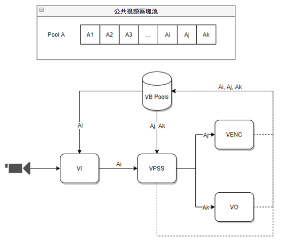

3.2. Design Overview¶
3.2.1. Video Memory Block Pool¶
Video Memory Block PoolmaintoeachModule(VI/VPSS/VO/VDEC/VENC/GDC…)provideblockPhysicalMemoryFunction, responsible forMemoryGet, allocateandreceive, PhysicalMemoryresourceineachbodyprocessingModuleinUse, andnot.
multiplegroupSizesame, PhysicalAddresscontinuousregionblockgroupaVideobuffer pool. mustinsystemInitializebeforeConfigurationcommonVideobuffer pool. According torequiredFunctionnotsame, commonbuffer poolQuantity, regionblockSizeandQuantityshouldforshouldhastheadd or remove.
Videobuffer poolrequiredQuantity, requiredpointas follows:
eachmultipleachannelneed toincreasetwo(ping-pong buffer).
VOisconditiononeexampleoutside, isAccording toDisplayBufLentodetermine, Minimumis3.
If channelu32Depthnotis0, thenneed toincreaseu32DepthQuantity.
eachincreaseaGDCFunction(lens distortion, rotation, etc), need toa.
inMemoryspaceenoughcaseunder, canMaximumspacetocreateacommonVideobuffer poolthat iscan; If isMemoryUse, It is recommended to UsemultiplenotsameSizecommonVideobuffer pool.
thehasVideo ProcessingChannelcanfromcommonVideobuffer poolinGetVideoregionblockused to savecaptureImage, if Figure and Table Medium.
VI firstfromcommonVideobuffer pool A MediumGetVideoregionblock AiwithstorefromSensortheReceiveundertoVideoData.
When VIcompletecapture, regionblockAi through VISendgive VPSS, VPSS Channel 01samefromcommonVideobuffer pool A MediumGetVideoregionblockAj, Ak.
When VPSScompletedOperationafter, Inputregionblock AibeReleasecommonVideobuffer pool, AjisOutputImageregionblock buffer Sendgive VENC, Ak is OutputImageregionblock buffer Sendgive VO.
Aj through VENC EncodingcompleteofafterReleasecommonVideobuffer pool, Ak through VO DisplaycompleteofafterReleasecommonVideobuffer pool.

Figure 3.1 commonVideobuffer pool¶
Videobuffer poolSizecalculateInterface | Interface |
|---|---|
COMMON_GetPicBufferConfig | onelinear FormateachpartDataSize |
COMMON_GetPicBufferSize | onelinear Formatbuffer pool |
3.2.2. System Binding¶
SDKprovideSystem BindingInterface (CVI_SYS_Bind), that isthroughBindDatasourceandDataReceiveusertocreatebothbetweenbindingrelationship. Bindafter, DatasourcegenerateDatawillautomaticSendgiveReceiveuser. aDatasourcecanBindmultipleDataReceiveuser, If Datasourcenot bound, thenwillautomaticReturnVideo Memory Block Pool.
beforeSupportBinding Relationshipsif underTable as shown.
Datasource | DataReceiveuser |
|---|---|
VI | VPSS VENC VO |
VPSS | VO VENC VPSS |
VDEC | VPSS VENC VO |
AI | AENC AO |
ADEC | AO |
3.2.3. VI and VPSS Operating Modes¶
VIand VPSS eachautoOperating modeisOnline, OfflineMode, Operating modeDescriptionif underTable as shown.
Mode | VI_CAPwithVI_PROC | VI_PROCwithVPSS |
|---|---|---|
OnlineMode | VI_CAPwithVI_PROCbetweenOnlineDatastreamtransmit, thisModeunderVI_CAPisconnectDatastreamsendgiveVI_PROC, whilenotwillRAWDatatoMemory. | VI_PROCwithVPSSbetweenOnlineDatastreamtransmit, thisModeunderVI_PROCisconnectDatastreamsendgiveVPSS, whilenotwillYUVDatatoMemory. |
OfflineMode | VI_CAPRAWDatatoMemory, Then, VI_PROCfromMemoryReadRAWDataperform afterprocessing. | VI_PROCYUVDatatoMemory, Then, VPSSfromMemoryReadYUVDataperform afterprocessing. |
VI PIPEcanSetmultipleOperating mode, caseas follows:
the 0 item() PIPE can has 4 Mode:
VI Online VPSS Offline
VI Online VPSS Online
VI Offline VPSS Offline
VI Offline VPSS Online
other PIPE, If inwithunderOperating modetablein, is”-“, meansNonemethodoperationOutputYUV, onlycanbeforeaPIPEinHDRundersameoperation.
PIPE ID | 0 () | 1 () | 2 () | 3 () |
|---|---|---|---|---|
Mode1 | Offline | Offline | Offline | Offline |
Mode2 | Online | Online |
3.2.4. VPSS Operating Modes¶
VPSScanhastwoModeSINGLEorDUAL, canthroughCallCVI_VPSS_SetModeperform Set.
Processor | Mode | set | Channelnumber |
|---|---|---|---|
CV184x | SINGLE | 0 | 4 |
DUAL | 0 1 | 1 3 |
Preset toSINGLE.
If SINGLEtime, need toinVPSSgroupCreatetime, specifiedoperationVPSSDevice.
3.2.5. Video PipelineAlignmentRequirements¶
inprocessingfromMEMORYDatatime, eachProcessorModulehasnotsameRequirements. AlignmentisImageprocessingtimeeachonelineData, need toisthistimesnumber. thisoutside, MemoryAddressshouldaccording to 4096 bytes (4K) numbertimesperform Alignment, VBdefaultis4KAlignment.
For example: 720x480YUV420 PLANARFormat.
YthereforeisALIGN(720, 64) x 480 = 768 x 480data; U/VthenisALIGN(360, 64) x 240 = 384 x 240.
canthroughCVI_VPSS_SetChnAlignetc.APIperformmodify, butnotcanless thanhardware limit.
Processor | Module | Alignment |
|---|---|---|
CV184x | VI VPSS VO GDC VENC | 64 64 64 64 64 |
3.2.6. dualsystem¶
If isdualsystemSDK, need toonestartCallCVI_SYS_Init, thisInterfacewillfordualInitialize, createandaftercanCalllaterAPI, shouldCVI_SYS_ExitislastCallInterface.